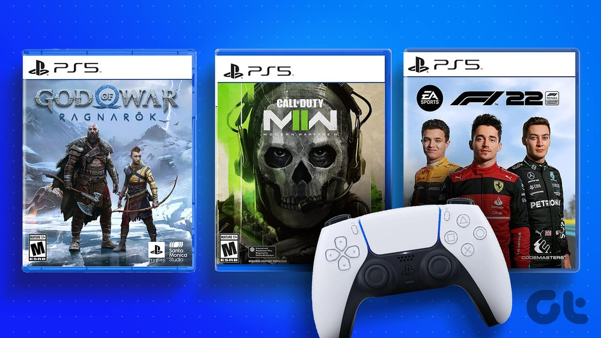
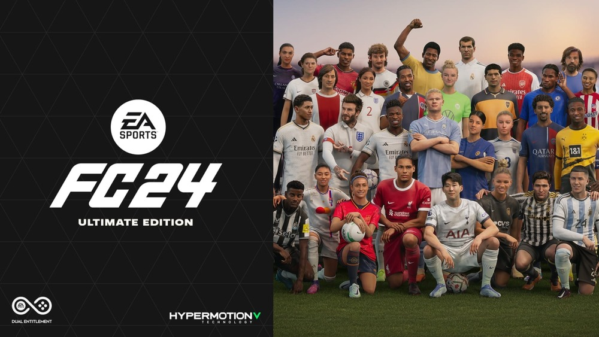
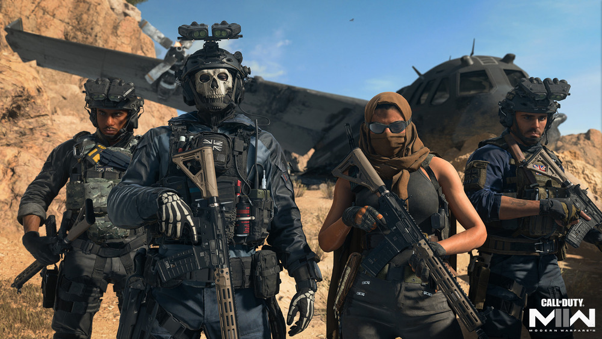

My favorite video games

EAFC 24
EAFC 24 is a football video game that is played on Playstation Consoles, Xbox Consoles, Gaming PCs and mobile phones. This game is produced by EA Sports and was part of The FIFA franchise until August 2023. The first FIFA game was released September 2002 and has been released every year since then as a different version of the game, the last one being FIFA23. The game is the best selling sports game in the world and has sold over 325 million copies since its first release. As frustrating as the game can be sometimes, it features almost real life experience of what it means to lead your favorite football team to wins, draws and losses. It has selective tabs for playing against opponents online and earning rewards as you win. With various options like Career mode and Tournaments, you can move on to being the player on the field or the brain behind the games. It really is one of the best designed games in the world.
Call of Duty
Call of Duty is a game almost everybody knows about. Call of Duty is a video game series and media franchise published by Activision, starting in 2003. It is the world's best selling first person shooter video game franchise and has sold over 400 million lifetime unit sales. It combines single player missions to engaging multiplayer modes versus various opponents and extraordinarily thrilling campaigns at each release. With versions like Call of Duty Warzone and Call of Duty Modern Warfare, gamers all of the world have been known to spend a reasonable amount of time on the controllers waiting to fight beat the "next". Call of Duty can be played on mobile phones and on consoles as well as gaming PCs.
